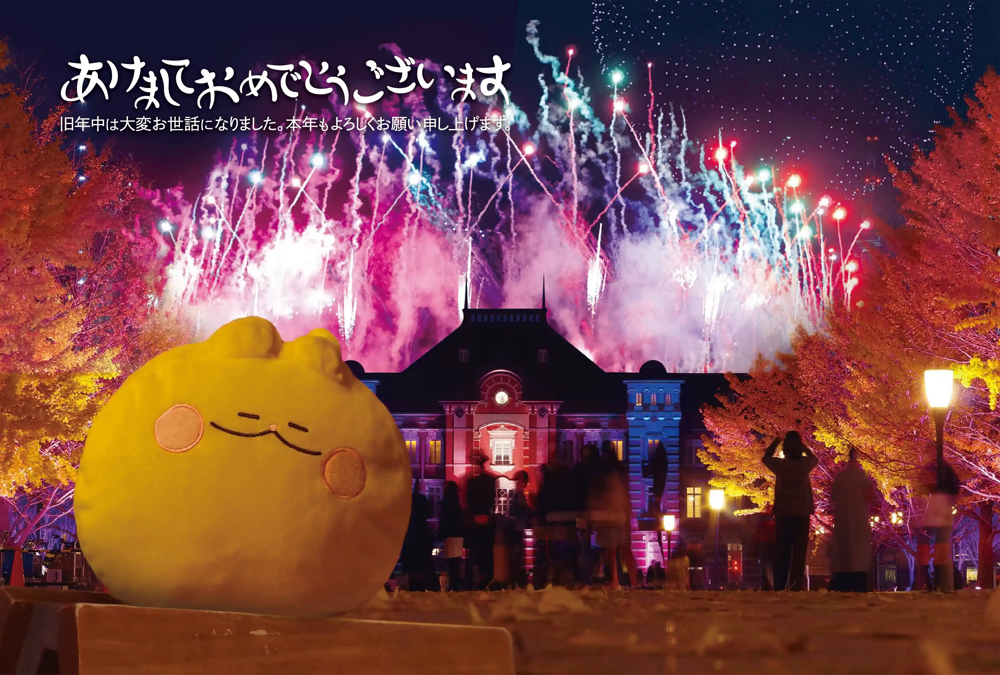
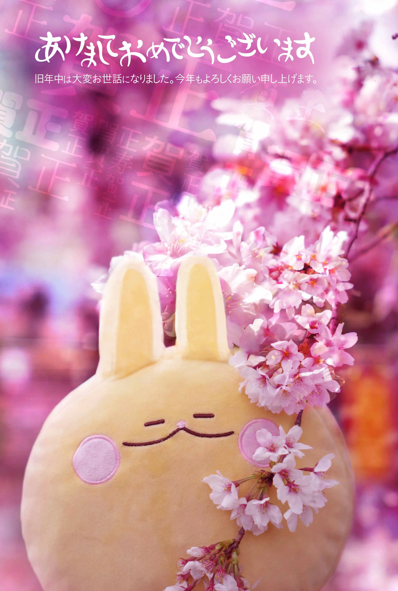

いなにわうどん.みんな
写真
キロロ
九州旅行（長崎・福岡、2022/02/21―25）
卒業式前日（横浜サイエンスフロンティア高校、2022/03/01）
北海道旅行（札幌・小樽・苫小牧、2022/01/13―15）
東京オリンピック開会式・聖火・閉会式（2021/08）
東京都現代美術館（2022/02/17）
その他
書いたもの・こと
桜が舞い上がるページ
2022年版 つくばらーめん10選（PDF, 1.5MB）
ネレネー山脈
年賀状宛名作成ツール
ほしいものリスト
超便乗ツール
Twight 関連リンク（工事中）
KdBもどき関連リンク
授業感想：
2022年度 春学期
｜
2021年度
年賀状


外部リンク
Twitter
@kyoto_mast21
GitHub
inaniwaudon
はてなブログ
いなにわうどん
Zenn
inaniwaudon
Qiita
inaniwaudon